Scout — Open Source
From 230 Roles Across 5 Sources to 3 Worth My Time
I built Scout after realizing that job searching was not a discovery problem. It was a continuity problem. The role was in one place, the resume in another, and the reasoning behind each application disappeared between them.
RoleSolo Product Designer & Builder
StatusFree & Open Source
ScopeProduct Strategy, UX, Visual Design, React/TypeScript Implementation
Problem Statement
Job searching is scattered across job boards, company sites, inbox alerts, resume files, and application trackers. Finding the role is only the beginning; the work required to decide, tailor, and apply is fragmented too.
The Product Thesis
Scout is an open-source workspace that keeps the job, the fit assessment, the resume edits, and the application connected from discovery through submission.
01The Bet
Go Beyond the Traditional LinkedIn Search
Tell Scout where to look, then let it bring the worthwhile opportunities together.
Scout can look through Gmail job alerts, public discovery feeds, curated lists, company career pages, and any other resource I point it toward. It extracts the roles, removes duplicates, checks basic fit and eligibility, and separates the opportunities worth my time from the noise.
From there, the job becomes the centre of the workflow. Scout keeps the role, profile match, resume edits, and cover letter connected instead of making me restart the context in a different tool at every step.
02Design-Engineering Decisions
Make uncertainty visible, then keep context intact
The product is shaped around the moments where a job-search copilot could quietly make the wrong call.
Source-directed discovery. Users choose where Scout looks — from Gmail alerts and public feeds to curated pages and company boards — so the search has a clear boundary.
Eligibility is not a guess. Duplicate roles are consolidated, while fit and eligibility checks are surfaced as signals that may need verification rather than presented as fact.
Approval stays human. Resume suggestions show the original line, the proposed revision, and the evidence behind it. Scout can help prepare the application, but it does not silently rewrite or submit one.
One role, one thread of context. The selected role carries through profile matching, resume edits, and cover-letter generation so each step builds on the last.
03What It Looks Like
From Finding the Role to Preparing the Application
Five screens from the workflow.
Image 1 of 5
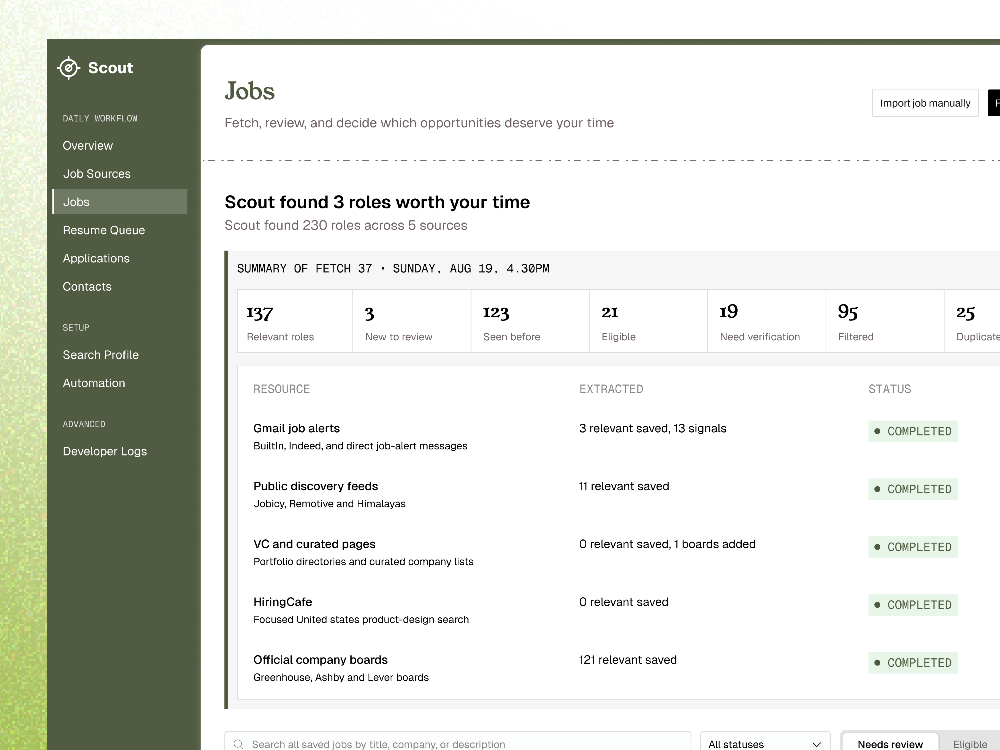
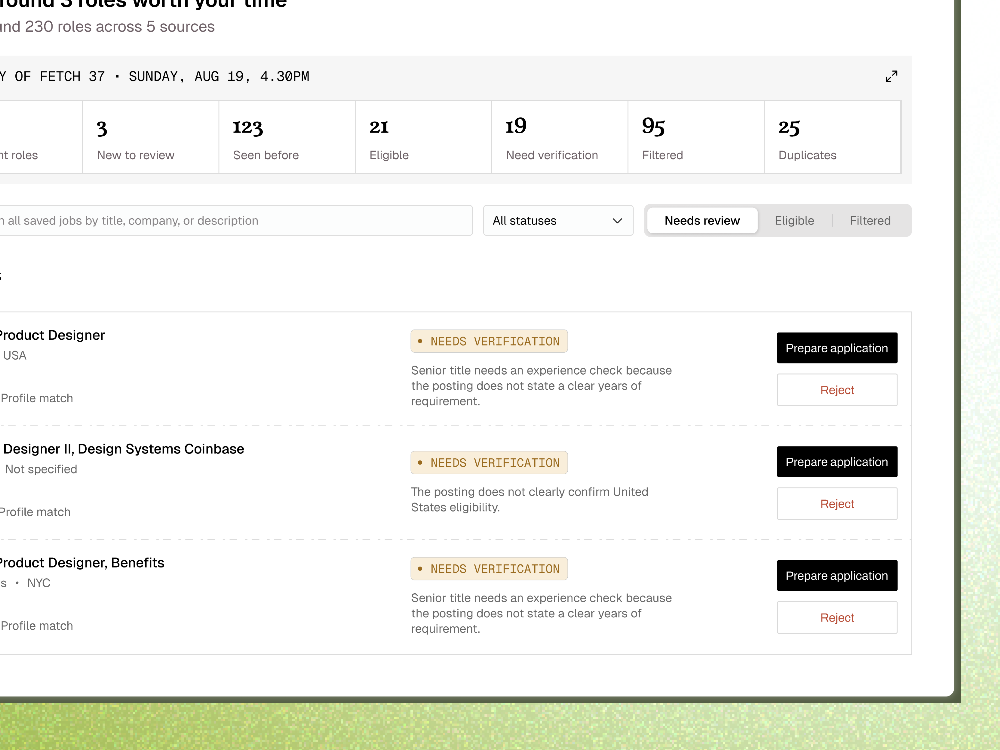
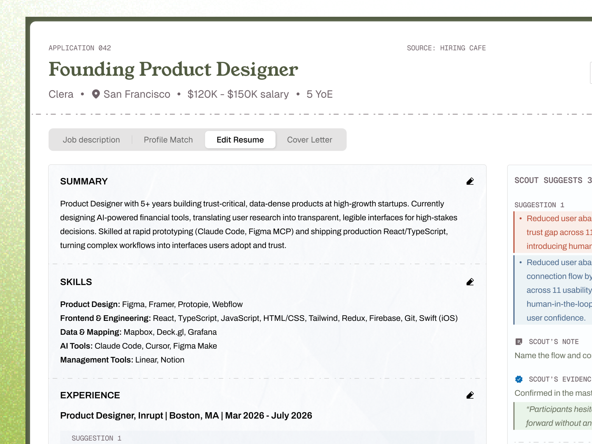
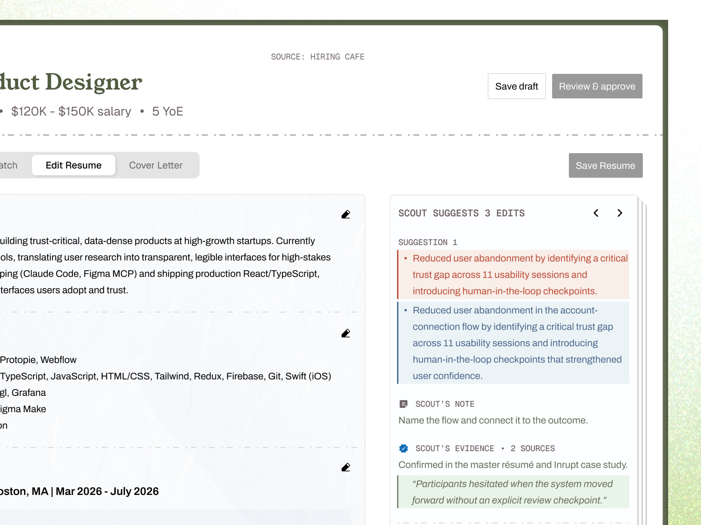
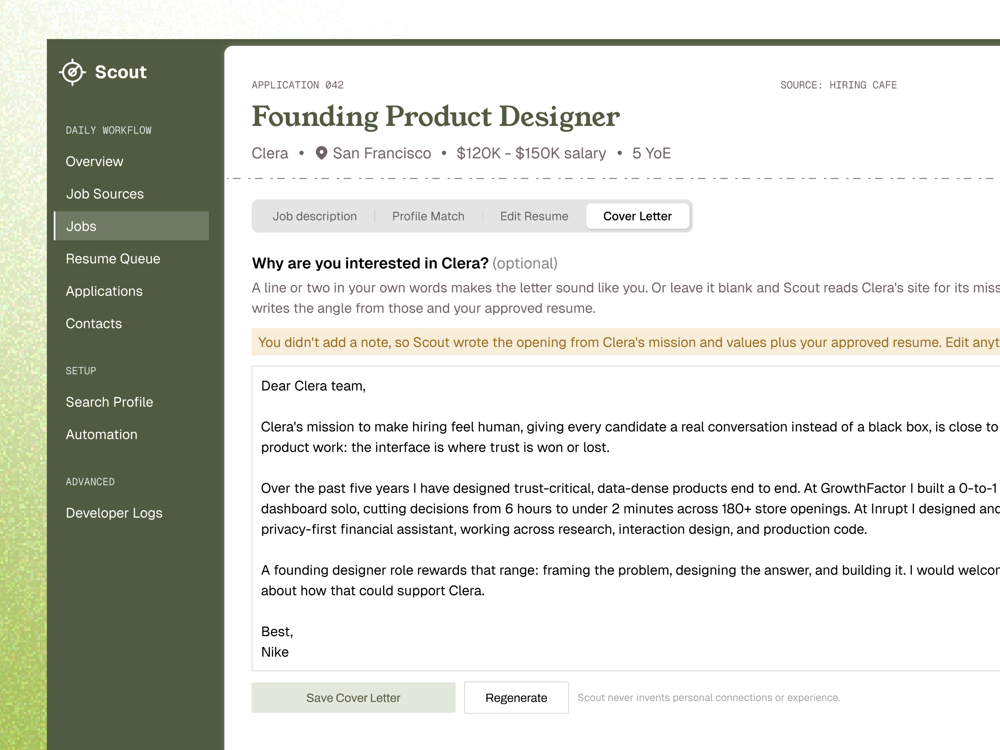
What Scout does
01 · Discover
Searches the resources you choose and surfaces roles worth your time.
02 · Tailor
Suggests resume edits based on the role and shows the evidence behind them.
03 · Apply
Uses the same job context and approved resume to draft the cover letter.
Open Source
Scout is free and open-source. Use it, adapt it, or build on top of it.
View Scout on GitHub ↗What Scout does not automate
Scout is deliberately not an auto-apply tool. Eligibility checks can be incomplete, job data can become stale, and AI suggestions still need human approval. The product is designed to make those uncertainties visible rather than hide them.
Scout — Brand Design
Giving Scout the Voice of an Editor You Trust
Scout needed to feel less like an AI assistant and more like a meticulous editor sitting beside you—calm, candid, and always working in your corner.
FocusVoice, Visual Identity, Product Expression
RoleBrand Designer
SystemYoung Serif, Geist, Geist Mono
01Finding the Voice
Not a chatbot. An editor in your corner.
In my head, Scout has the measured confidence of Robert De Niro in The Intern: meticulous, quietly opinionated, and always in your corner.
Trustworthy
Make the strongest case the truth allows.
In the productSuggestions stay connected to their sources. No new achievement or metric is introduced.
Opinionated
Have a point of view, and explain it.
Scout’s note“Name the flow and connect it to the outcome.”
Tactile
Make every edit feel reviewable.
In the productStacked notes sit beside the résumé, keeping the change and the decision together.
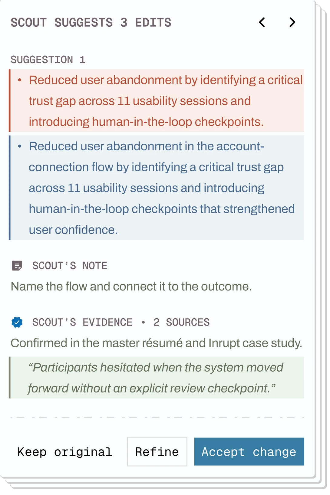
02References
Software that shows its work
I borrowed the clarity of a diff, the accountability of a citation, and the texture of an editor’s desk.
Reference 1 of 4
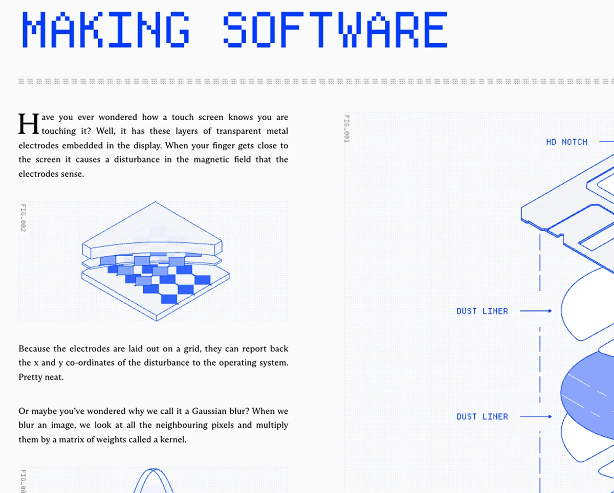
Technical clarity. Editorial character.
Applied to Scout Precise labels and editorial hierarchy give technical information a distinct personality.
Reference: Making Software — Dan Hollick ↗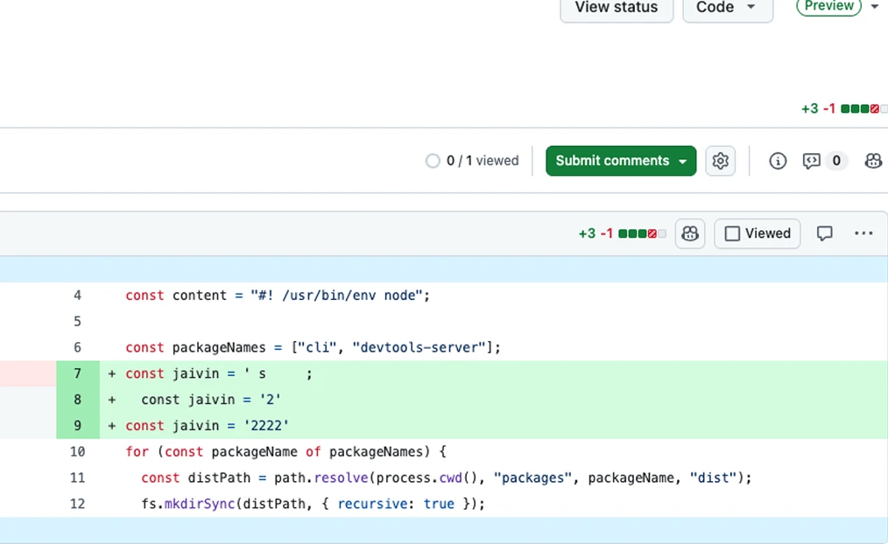
Visible changes
Applied to Scout Original and proposed résumé content remain visible together.
Reference: GitHub’s diff interface.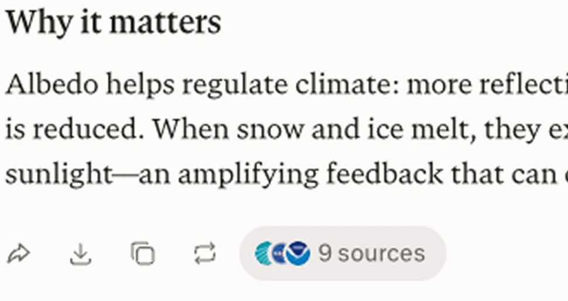
Evidence beside the claim
Applied to Scout Important suggestions expose their supporting evidence and reasoning.
Reference: citation interface from my software research board.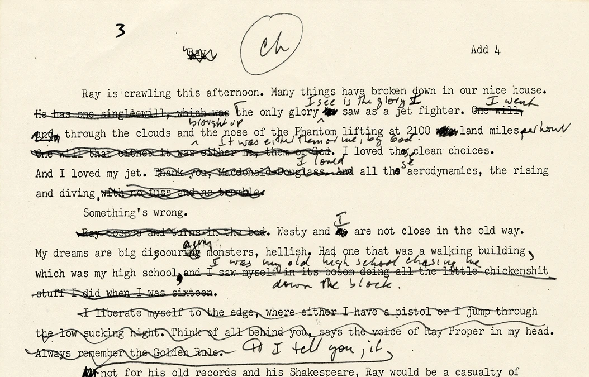
Editing as a physical process
Applied to Scout Ruled dividers, stacked suggestions, paper texture, and margin annotations make reviewing feel tangible.
Reference: annotated manuscript from my editorial research board; original attribution unavailable.03From Principle to Product
Every visual choice had a job
The personality became a set of decisions you can see in the interface.
Trustworthy
Visual expressionRestrained olive, precise labels, visible sources
Product expressionEvidence and verification panels
Opinionated
Visual expressionStrong serif hierarchy and direct language
Product expressionScout’s recommendation and primary action
Tactile
Visual expressionPaper grain, rules, margins, stacked sheets
Product expressionRésumé editor and suggestion cards
Transparent
Visual expressionPaired before-and-after colors
Product expressionOriginal and proposed résumé lines
Technical
Visual expressionMonospace metadata
Product expressionApplication IDs, sources, evidence counts
04Typography
Three typefaces, three responsibilities
Young Serif · Editorial authority
Make the strongest case the truth allows.
Founding Product Designer
A clearer account of the work you’ve already done.
Name the flow and connect it to the outcome.
Young Serif
Editorial authority for major job titles and expressive statements.
Geist
Product clarity for navigation, controls, descriptions, and everyday interface copy.
Geist Mono
Traceable metadata for sources, evidence counts, application numbers, and suggestion labels.
Within the résumé itself, Archivo keeps the applicant’s content distinct from Scout’s editorial voice.
Behind the type choices
The typefaces I explored, grouped by the job they needed to do. Each name is set in its own typeface.
Group 1 of 3
01 · Interface & document
ArchivoRésumé content
GeistSelected · Interface
Host Grotesk
Schibsted Grotesk
Hanken Grotesk
Poppins
02 · Editorial character
Source Serif Pro
Young SerifSelected · Headlines
PT Serif
03 · Metadata
Geist MonoSelected · Metadata
JetBrains Mono
05Color
Color explains what changed—and what to trust
An olive anchor and a quiet document surface leave room for changes and evidence to stand out.
Olive
#515B41Scout’s voice and navigation.
Paper white
#FFFFFFThe document surface.
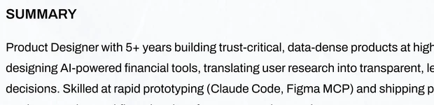
Terracotta
#B94E38The original résumé line.
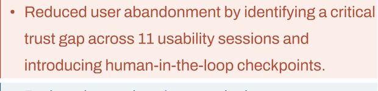
Blue
#49688DThe proposed improvement.
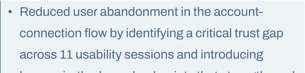
Pale green
#E9F4E9Supporting source evidence.
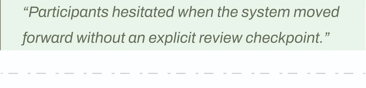
Warm gray
#6E6368Annotations and metadata.
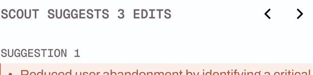
Color supports the labels “Original,” “Proposed,” and “Evidence”; the meaning never depends on color alone.
06The System at Work
From application software to an editorial workspace
The early exploration established the editorial language. The final direction gave the workspace a stronger olive frame.

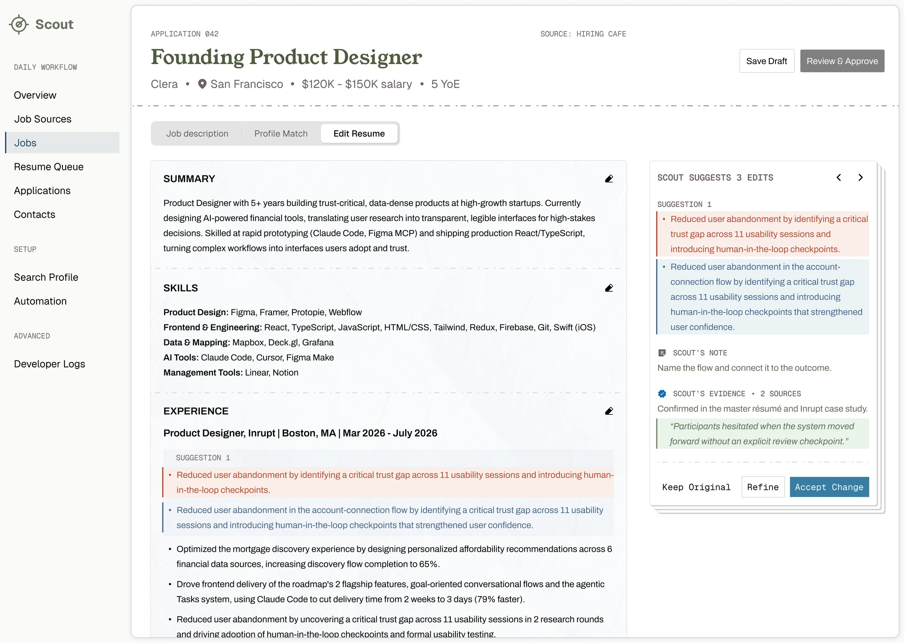
The paper, serif hierarchy, and stacked notes were already taking shape.
View full size ⤢
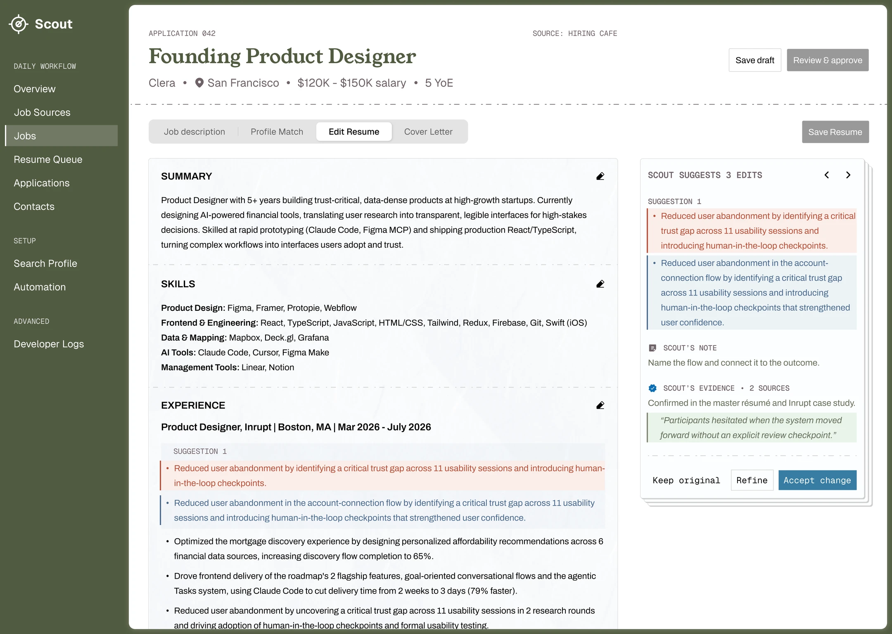
Olive navigation anchors the document and gives Scout a more distinct presence.
View full size ⤢A stronger frame
The olive sidebar adds contrast and separates navigation from the document.
An editorial hierarchy
Serif titles and monospace labels carry through from exploration to final.
Reviewable suggestions
Layered notes keep the original, revision, and evidence together in both directions.
Poster 1 of 5